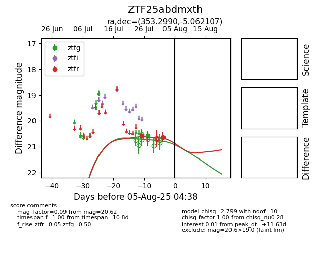

Target ZTF25abdmxth at 2025-08-05 04:38, see:
FINK: fink-portal.org/ZTF25abdmxth
Lasair: lasair-ztf.lsst.ac.uk/objects/ZTF25abdmxth
ALeRCE: alerce.online/object/ZTF25abdmxth
alt names
ZTF25abdmxth (ztf,fink)
coordinates:
equatorial (ra, dec) = (353.2990,-5.06211)
galactic (l, b) = (79.2714,-61.11475)
photometry
last ztfg=20.57, ztfr=20.62
1 ztfg, 2 ztfr detections
